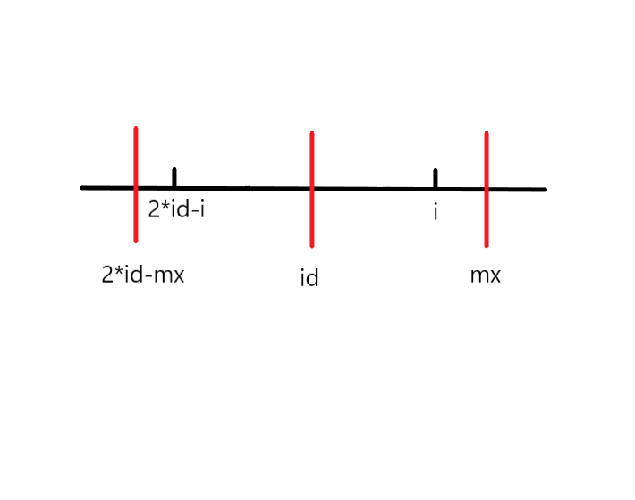
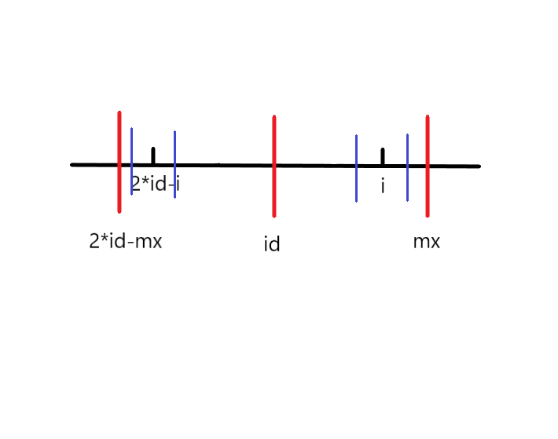
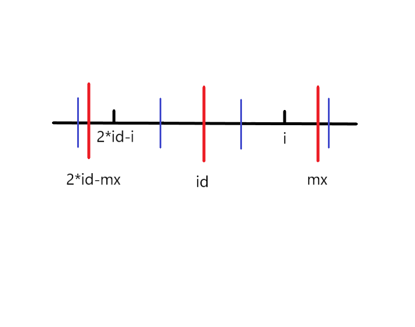
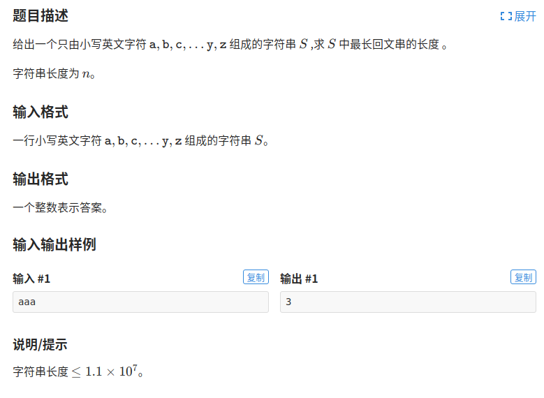

在处理字符串问题时，常常会遇到回文串。回文串是正着和反着都一样的字符串，比如”aba”, “baab”等。
朴素做法
我们要如何找出最长的回文子串呢？
我们找回文串的时候，一般先确定回文串的中心，然后往两边尽可能的延伸。
回文串根据长度可以分为奇回文和偶回文，所以我们定义两个数组d1和d2，它们分别表示以i为中心，最长的奇回文和偶回文的半径。
1 | string s; |
朴素算法的时间复杂度很显然是O(n^2)的，这个算法效率太慢了，且还分为奇回文偶回文来计算，太麻烦了。
预处理字符串
我们可不可以将奇回文和偶回文一起处理，不分两个数组？
我们将原始的字符串进行一些处理，得到一个新的字符串，就可以很方便的计算了。
我们在每一个字符间，包括头和尾，都插入一个特殊的字符，比如#，当然这个字符得是原字符串一定不出现的字符才行。
1 | 原字符串: abba |
经过这样的预处理后，我们得到的字符串长度为奇数，并且可以将d1和d2合并成一个数组。
计算最长回文子串
我们用p数组来记录以i为中心的最长回文串的半径。
1 | i 0 1 2 3 4 5 6 7 8 9 10 11 12 |
观察到以i为中心的最长回文串的长度为p[i]-1
所以最长的回文子串的长度为max(p[i]-1)
计算最长回文子串的开始索引
知道了最长回文串的开始索引，我们就能找出最长的回文串是哪一个了。
还是以”cabbaf”为例
1 | i 0 1 2 3 4 5 6 7 8 9 10 11 12 |
观察到p[6]=5是最长的半径，用6(i)-5(p[i])得到1，发现1正好是原始字符串”cabbaf”中a的索引号
再看一个奇回文的例子，p[1]=2，计算以c为中心的最长回文子串的开始索引，用1(i)-2(p[i])=-1，出现了负数，这可不行。
我们再在字符串前面加一个特殊符号’$’，在末尾加‘@’，这两个字符也要保证原始字符串中绝对不出现。
1 | i 0 1 2 3 4 5 6 7 8 9 10 11 12 13 14 |
然后我们观察到最长回文串的开始索引等于int index = (i-p[i])/2
计算p数组
解决了以上的问题，我们该解决如何高效的计算p数组了。
我们设置两个变量，id和mx，id是当前所找到的边界最靠右的回文串的中心，mx是最右的回文串边界。即mx=p[id]+id
我们尽可能的利用回文串的性质来降低时间复杂度度。
假设当前遍历到i，要求p[i]，2*mx-id是mx关于id对称的点，2*id-i是i关于id对称的点。
当前找到边界最靠右的回文串是s[2*id-mx…mx]

我们将会面临三种情况：
第一种：

蓝色线的区间是以2*id-i为中心最长的回文串的范围，根据回文串的对称性，我们知道此时p[i]=p[2*id-i]
第二种：

若i+p[2*id-i] > mx，我们并不能确定mx之后的情况是怎么样的，所以只能先让p[i]=mx-i，然后根据朴素算法再慢慢向左右尽可能的拓展。
第三种：
若i > mx的时候，我们让p[i]=1，然后根据朴素算法尽可能的向两边拓展。
模板：
1 | char s[maxn]; |
Manecher算法的时间复杂度是O(n)
例题

1 |
|